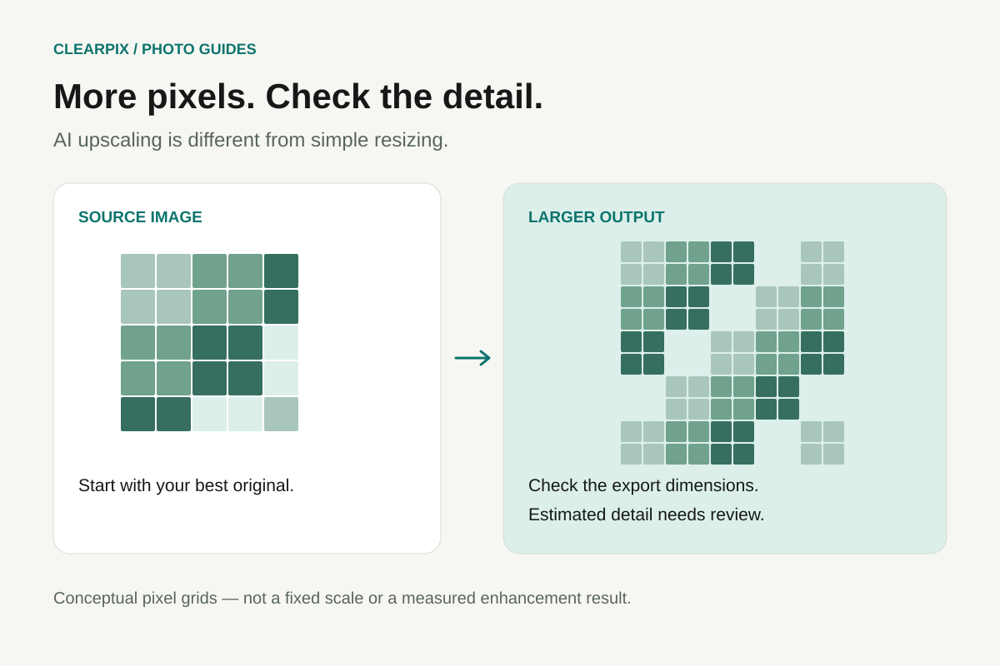

An old phone picture looks tiny today
Give a low-resolution memory a clearer view on a modern screen.
It looks fine as a thumbnail. Open it full-screen and the detail falls apart. ClearPix helps upscale and enhance small photos on your iPhone, giving old downloads and low-resolution copies a clearer second look.
Give a low-resolution memory a clearer view on a modern screen.
Start with the largest available version. AI enhancement helps bring cleaner edges and texture into view.
Compare the exported file for the screen, album, or print you have in mind.
Choose the original or largest file available in your library.
Select Standard and tap AI Enhance. Try Strong when the picture is also grainy.
Compare the result, check the export dimensions, and save a copy for your next use.

Enhance visible detail in old phone pictures, saved images, and low-resolution copies. Compare the result and view its export dimensions before saving.
Old phone pictures, saved message attachments, and low-resolution favourites are useful places to start. Choose the largest copy you can find.
Open Export Photo to view the result dimensions before saving.
Check the exported file at your intended print size and compare its dimensions with your printer’s requirements.
Yes. Pro includes a queue of up to five photos, useful for pictures from the same album or occasion.
Bring a low-resolution favourite into ClearPix and see the difference on your own screen.
Download on the App StoreBy the ClearPix team · Contact support